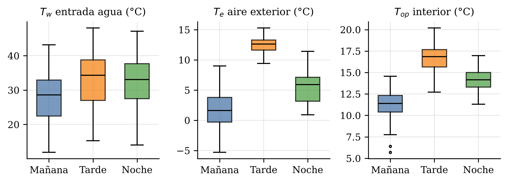
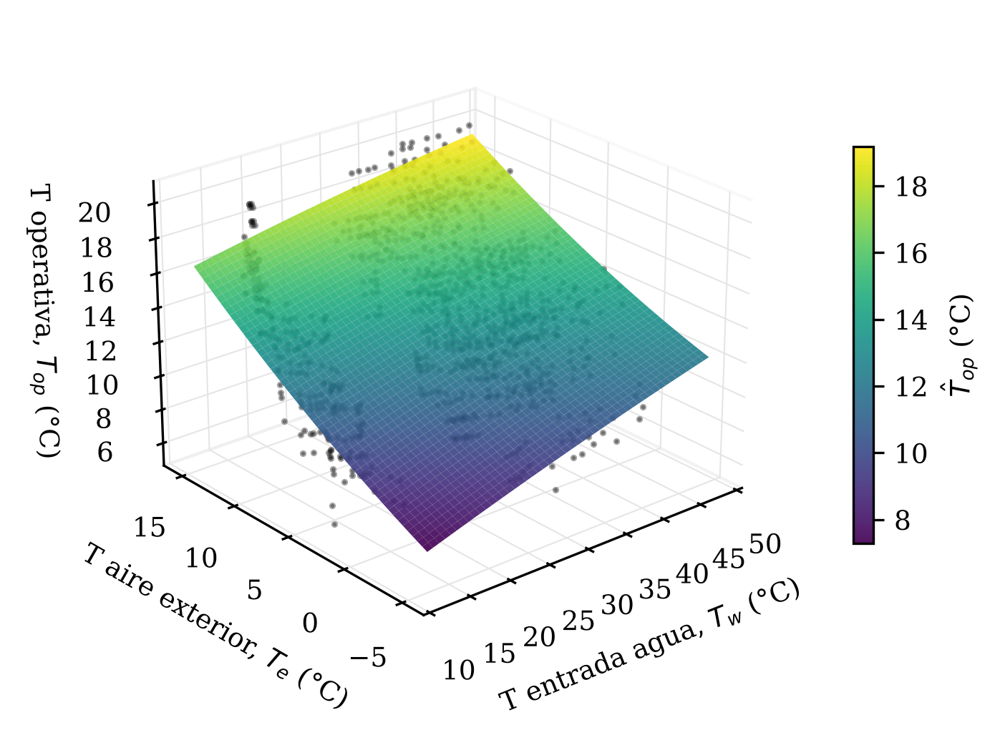
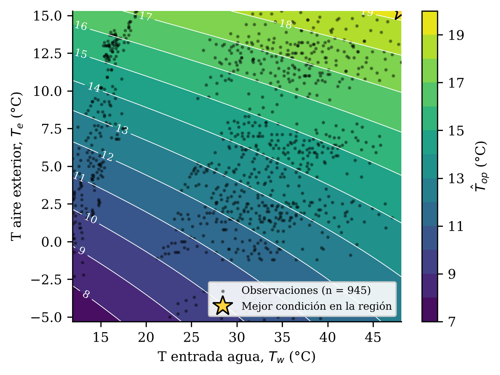
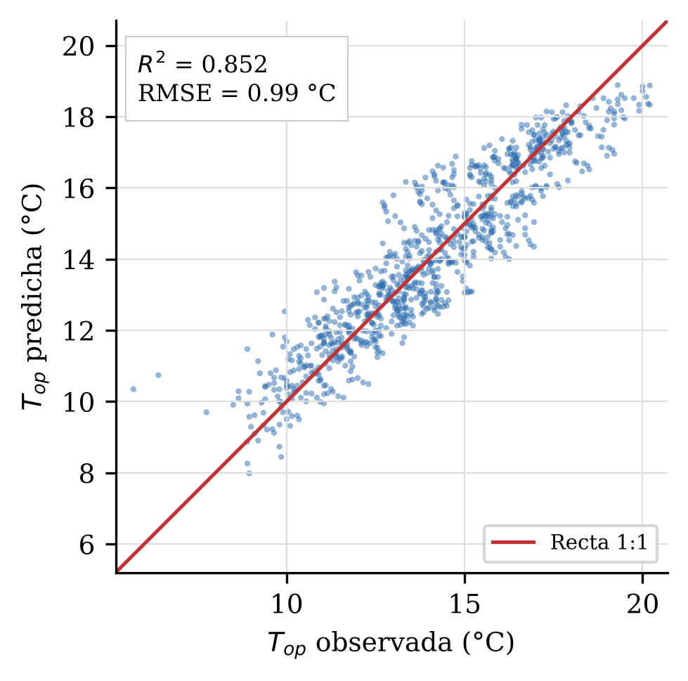
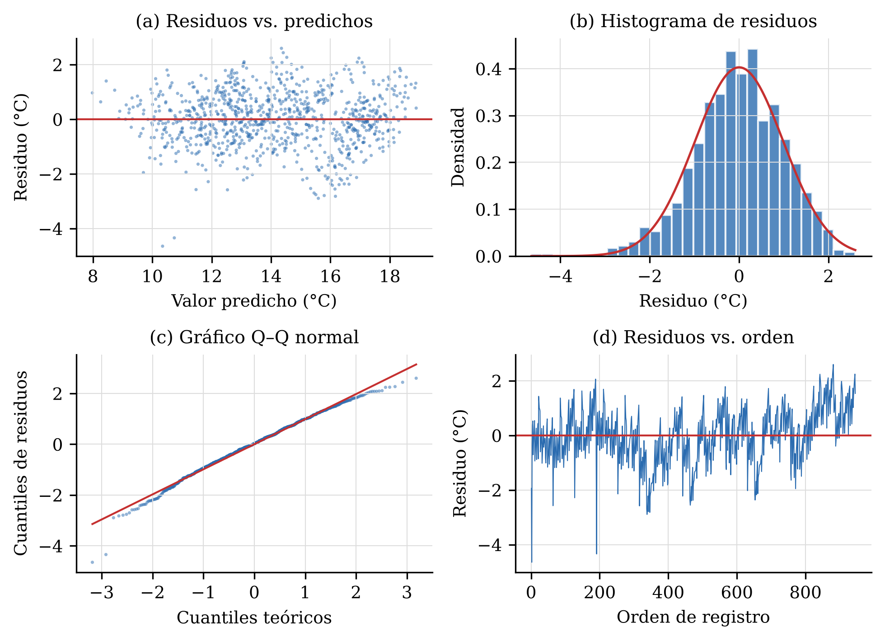
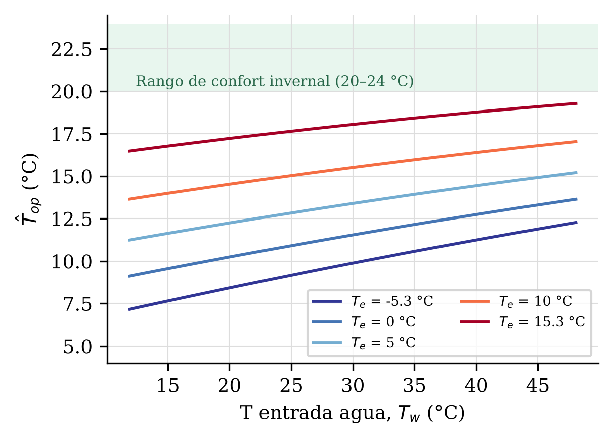

Modelling indoor operative temperature of a radiant floor heating system using response surface methodology
Renzo Gabriel Mamani Galindo1,*, Aquiles Taylor Ramos Yapo1, Mateo Alejandro Salinas Mena2
1 Estudiante investigador, curso de Metodología de la Investigación.
2 Docente nombrado, Ingeniero Mecánico Electricista; asesor de la investigación.
* Autor de correspondencia: renzomamanigalindo@gmail.com
Los sistemas de calefacción por piso radiante son una alternativa eficiente para climatizar viviendas en zonas de clima frío, pero su desempeño depende de la temperatura del agua de impulsión y de las condiciones exteriores. Este estudio modeló la temperatura operativa interior (Top) de un ambiente calefaccionado por piso radiante en función de la temperatura de entrada del agua (Tw) y de la temperatura del aire exterior (Te) mediante la metodología de superficie de respuesta (MSR). Se registraron 945 observaciones con el sistema en funcionamiento durante dos semanas (11 al 25 de septiembre de 2026) en tres franjas diarias, con termómetro de globo y sensores de temperatura. Se ajustó un modelo polinomial de segundo orden en variables codificadas por mínimos cuadrados, se evaluó con ANOVA y se realizó el análisis canónico. El modelo explicó el 85.2 % de la variabilidad (F = 1084.2; p < 0.001; RMSE = 0.99 °C; R2pred = 0.850). Ambos efectos lineales, el término cuadrático de Te y la interacción fueron significativos; la curvatura en Tw no lo fue (p = 0.194). La temperatura exterior fue el factor dominante (β2 = 4.08) frente a la del agua (β1 = 1.98), y la interacción negativa indica que el agua caliente es más eficaz en condiciones más frías. El punto estacionario resultó un punto silla fuera de la región experimental, por lo que la mejor condición se ubica en la frontera: Tw = 48.1 °C y Te = 15.3 °C, con Top estimada de 19.3 °C, todavía por debajo del umbral invernal de confort de 20 °C. Se concluye que el sistema, en su configuración actual, requiere mayor aporte térmico o mejoras en la envolvente para alcanzar condiciones de confort.
Palabras clave: piso radiante; temperatura operativa; metodología de superficie de respuesta; confort térmico; calefacción hidrónica; análisis canónico.
Radiant floor heating systems are an efficient option for space heating in cold climates, but their performance depends on supply water temperature and outdoor conditions. This study modelled the indoor operative temperature (Top) of a room heated by a radiant floor as a function of the supply water temperature (Tw) and the outdoor air temperature (Te) using response surface methodology (RSM). A total of 945 observations were recorded with the system in operation over two weeks (11–25 September 2026) in three daily time windows using a globe thermometer and temperature sensors. A second-order polynomial model in coded variables was fitted by least squares, assessed through ANOVA and analysed canonically. The model explained 85.2 % of the variance (F = 1084.2; p < 0.001; RMSE = 0.99 °C; predicted R2 = 0.850). Both linear effects, the quadratic term of Te and the interaction were significant, whereas curvature in Tw was not (p = 0.194). Outdoor temperature was the dominant factor (β2 = 4.08) compared with water temperature (β1 = 1.98), and the negative interaction shows that hot water is more effective under colder conditions. The stationary point was a saddle point outside the experimental region; hence the best condition lies on the boundary (Tw = 48.1 °C, Te = 15.3 °C), giving an estimated Top of 19.3 °C, still below the 20 °C winter comfort threshold. The system, as currently configured, requires greater heat input or envelope improvements to achieve thermal comfort.
Keywords: radiant floor heating; operative temperature; response surface methodology; thermal comfort; hydronic heating; canonical analysis.
La calefacción de espacios en zonas de clima frío representa una fracción importante del consumo energético de las edificaciones y condiciona directamente la salud y el bienestar de sus ocupantes. Entre las tecnologías disponibles, los sistemas hidrónicos de piso radiante destacan por distribuir el calor de forma uniforme, operar con temperaturas de agua moderadas y favorecer el intercambio radiante con los ocupantes, lo que permite alcanzar sensaciones de confort con temperaturas de aire menores que los sistemas convectivos (Olesen, 2002; Babiak et al., 2007). Una revisión de cinco décadas de investigación confirma su potencial de ahorro energético y su compatibilidad con fuentes de baja temperatura (Rhee & Kim, 2015).
El desempeño de estos sistemas suele evaluarse mediante la temperatura operativa (Top), magnitud que combina la temperatura del aire y la temperatura radiante media y que constituye la base de los criterios de confort de ISO 7730 (2005) y ASHRAE 55 (2020), derivados del modelo de Fanger (1970). Las normas de diseño de sistemas radiantes embebidos, como ISO 11855-1 (2021), establecen además límites para la temperatura superficial del piso que restringen la temperatura de impulsión del agua.
En la práctica, la Top alcanzada depende simultáneamente de variables controlables, como la temperatura de entrada del agua (Tw), y de variables no controlables, como la temperatura del aire exterior (Te), cuyas relaciones pueden ser no lineales y presentar interacción. La metodología de superficie de respuesta (MSR), introducida por Box y Wilson (1951) y sistematizada por Myers et al. (2016) y Montgomery (2017), permite aproximar estas relaciones mediante polinomios de segundo orden, identificar puntos estacionarios y caracterizar la región de operación favorable; su aplicación se ha extendido a la optimización de procesos en múltiples disciplinas (Bezerra et al., 2008).
Pese a ello, son escasos los estudios que aplican la MSR a datos de campo de sistemas de piso radiante operando en condiciones reales de clima frío, con amplias oscilaciones térmicas diarias. El objetivo de esta investigación fue modelar la temperatura operativa interior de un ambiente calefaccionado por piso radiante en función de la temperatura de entrada del agua y de la temperatura exterior mediante la MSR, determinar la naturaleza del punto estacionario y estimar la mejor condición de operación dentro de la región observada.
El estudio se realizó en un ambiente experimental equipado con un sistema hidrónico de calefacción por piso radiante, compuesto por una caldera de agua caliente, un circuito de tuberías embebido en la losa y puntos de medición de temperatura en la entrada y la salida del circuito. Las mediciones se efectuaron durante dos semanas consecutivas (del 11 al 25 de septiembre de 2026) en tres franjas diarias: mañana (05:00–07:00 h), tarde (12:30–14:30 h) y noche (20:00–22:00 h), con registros a intervalos de 5 min.
En el interior se empleó un termohigrómetro con termómetro de globo, conforme a los principios de ISO 7726 (1998), que registró la temperatura del aire, la temperatura radiante, la temperatura operativa y la humedad relativa; además, se midió la velocidad del aire con anemómetro y la temperatura superficial del piso en tres puntos (centro, extremo y puerta). En el exterior se registraron la temperatura del aire, la temperatura radiante y la humedad relativa con un segundo termohigrómetro de globo. Dado que la velocidad del aire interior fue nula en todos los registros (< 0.2 m/s), la temperatura operativa se calculó como la media aritmética de la temperatura del aire y la temperatura radiante media (ISO 7730, 2005).
Tabla 1. Variables medidas e instrumentos.
| Ubicación | Variable | Instrumento |
|---|---|---|
| Circuito hidráulico | T de caldera, T de entrada y salida del agua (°C) | Sensores de temperatura |
| Interior | T del aire, T radiante, T operativa (°C); HR (%) | Termohigrómetro con globo |
| Interior | Velocidad del aire (m/s) | Anemómetro |
| Piso | T superficial en centro, extremo y puerta (°C) | Termómetro de contacto |
| Exterior | T del aire, T radiante, T operativa (°C); HR (%) | Termohigrómetro con globo |
Se seleccionaron dos factores: Tw (factor controlable) y Te (factor ambiental), y como respuesta la Top interior. Se conservaron únicamente los registros con el sistema en funcionamiento (con temperatura de agua registrada), lo que dio una muestra de n = 945 observaciones. Los factores se codificaron en el intervalo [−1, 1] mediante
donde Tic es el centro del rango observado y ΔTi/2 su semirrango (Tabla 2). Se ajustó el modelo de segundo orden
por mínimos cuadrados ordinarios, β̂ = (X′X)−1X′y, con X = [1, x1, x2, x12, x22, x1x2]. La significancia global se evaluó con ANOVA (prueba F) y la de cada coeficiente con la prueba t (α = 0.05). Para el análisis canónico, el modelo se expresó en forma matricial
y el punto estacionario se obtuvo igualando el gradiente a cero (Myers et al., 2016):
Su naturaleza se determinó por el signo de los valores propios de B: todos negativos (máximo), todos positivos (mínimo) o de signo mixto (punto silla). Como el punto estacionario puede caer fuera de la región observada, se buscó además el máximo de ŷ sobre una malla de 201 × 201 puntos en −1 ≤ xi ≤ 1 y los resultados se decodificaron con Ti = Tic + (ΔTi/2)xi.
La adecuación del modelo se verificó mediante R2, R2 ajustado, R2 de predicción (estadístico PRESS), raíz del error cuadrático medio (RMSE) y análisis de residuos: normalidad (Kolmogórov–Smirnov y Anderson–Darling; Anderson & Darling, 1954), homocedasticidad (residuos frente a valores predichos) e independencia (Durbin & Watson, 1950). Los cálculos se realizaron en GNU Octave (Eaton et al., 2020) y se verificaron de forma independiente en Python (NumPy, SciPy).
Tabla 2. Factores, niveles observados y codificación.
| Factor | Variable real | Mín. (−1) | Centro (0) | Máx. (+1) | Codificación |
|---|---|---|---|---|---|
| x1 | Temperatura de entrada del agua, Tw (°C) | 11.9 | 30.00 | 48.1 | x1 = (Tw − 30.0)/18.1 |
| x2 | Temperatura del aire exterior, Te (°C) | −5.3 | 5.00 | 15.3 | x2 = (Te − 5.0)/10.3 |
| y | Temperatura operativa interior, Top (°C) | 5.7 – 20.2 (respuesta) | — | ||
La Tabla 3 resume las variables analizadas. La temperatura de entrada del agua varió entre 11.9 y 48.1 °C (media 29.72 °C) y la temperatura exterior entre −5.3 y 15.3 °C (media 6.52 °C), lo que refleja una amplitud térmica exterior de más de 20 °C. La temperatura operativa interior osciló entre 5.7 y 20.2 °C, con media de 14.06 °C; solo el 5.8 % de los registros superó 18 °C y el 0.63 % alcanzó 20 °C. La correlación entre los factores fue despreciable (r = 0.059; VIF = 1.004), de modo que sus efectos pueden estimarse de manera independiente. La Top se correlacionó más con Te (r = 0.833) que con Tw (r = 0.438).
Por franja horaria (Tabla 4; Figura 1), las condiciones más desfavorables se presentaron en la mañana, con Te media de 1.57 °C y Top de 11.39 °C, mientras que en la tarde, con mayor temperatura exterior y ganancia solar, la Top media llegó a 16.66 °C. La segunda semana presentó una Top media ligeramente superior (14.34 °C frente a 13.74 °C).
Tabla 3. Estadística descriptiva de las variables (n = 945).
| Variable | Media | DE | Mín. | Q1 | Mediana | Q3 | Máx. |
|---|---|---|---|---|---|---|---|
| Tw, entrada de agua (°C) | 29.72 | 9.55 | 11.9 | 23.4 | 31.7 | 36.8 | 48.1 |
| Te, aire exterior (°C) | 6.52 | 5.10 | −5.3 | 2.3 | 6.2 | 11.6 | 15.3 |
| Top, operativa interior (°C) | 14.06 | 2.58 | 5.7 | 12.2 | 14.0 | 16.0 | 20.2 |
Tabla 4. Media ± desviación estándar por franja horaria de medición.
| Franja | Horario | n | Tw (°C) | Te (°C) | Top (°C) |
|---|---|---|---|---|---|
| Mañana | 05:00–07:00 | 315 | 26.60 ± 8.68 | 1.57 ± 2.97 | 11.39 ± 1.40 |
| Tarde | 12:30–14:30 | 315 | 31.79 ± 9.57 | 12.51 ± 1.30 | 16.66 ± 1.60 |
| Noche | 20:00–22:00 | 315 | 30.77 ± 9.58 | 5.47 ± 2.47 | 14.13 ± 1.21 |

Figura 1. Distribución de la temperatura de entrada del agua, la temperatura exterior y la temperatura operativa interior por franja horaria.
Los coeficientes estimados se muestran en la Tabla 5. El modelo ajustado en variables codificadas es
y, expresado en variables reales (°C),
El ANOVA (Tabla 6) indica que la regresión es altamente significativa (F0 = 1084.20; p < 0.001) y que el modelo explica el 85.24 % de la variabilidad de la Top. Los términos de segundo orden, en conjunto, aportan una mejora significativa respecto del modelo de primer orden (F = 14.59; p < 0.001), aunque modesta en magnitud (R2 de 0.8455 a 0.8524). Todos los coeficientes fueron significativos salvo β11 (p = 0.194), lo que indica que la respuesta varía de forma prácticamente lineal con Tw en el rango estudiado. En unidades físicas, en el centro de la región, un aumento de 1 °C en Tw eleva la Top en 0.109 °C, mientras que un aumento de 1 °C en Te la eleva en 0.396 °C.
Tabla 5. Coeficientes estimados del modelo de segundo orden (variables codificadas).
| Término | Coeficiente | Error est. | t | Valor p | Signif. (α = 0.05) |
|---|---|---|---|---|---|
| β0 (intercepto) | 13.3922 | 0.0574 | 233.43 | < 0.001 | Sí |
| β1 (x1) | 1.9785 | 0.0789 | 25.08 | < 0.001 | Sí |
| β2 (x2) | 4.0837 | 0.0748 | 54.62 | < 0.001 | Sí |
| β11 (x12) | −0.1670 | 0.1285 | −1.30 | 0.194 | No |
| β22 (x22) | 0.5762 | 0.1328 | 4.34 | < 0.001 | Sí |
| β12 (x1x2) | −0.5793 | 0.1346 | −4.30 | < 0.001 | Sí |
gl del error = 939. Estimación por mínimos cuadrados ordinarios.
Tabla 6. Análisis de varianza (ANOVA) de la regresión.
| Fuente | gl | SC | CM | F0 | Valor p |
|---|---|---|---|---|---|
| Regresión | 5 | 5342.315 | 1068.463 | 1084.20 | < 0.001 |
| Lineal (x1, x2) | 2 | 5299.174 | 2649.587 | 2688.62 | < 0.001 |
| Cuadrático + interacción | 3 | 43.141 | 14.380 | 14.59 | < 0.001 |
| Error residual | 939 | 925.368 | 0.985 | ||
| Total | 944 | 6267.683 |
R2 = 0.8524; R2aj = 0.8516; R2pred (PRESS) = 0.8504; RMSE = 0.993 °C; MAE = 0.778 °C.
En forma matricial, b = [1.9785; 4.0837] y B = [−0.1670, −0.2897; −0.2897, 0.5762]. Los valores propios de B fueron λ1 = −0.2666 y λ2 = 0.6758; al tener signos opuestos, el punto estacionario xs = (6.448; −0.302) es un punto silla (Tabla 7). Además, se encuentra fuera de la región experimental (|x1,s| > 1), pues su decodificación exige Tw = 146.7 °C, valor físicamente inviable para un piso radiante; por tanto, no constituye un óptimo operativo. La superficie (Figura 2) y el diagrama de contorno (Figura 3) muestran una respuesta creciente en ambas direcciones, sin máximo interior; la mejor condición se ubica en el vértice (x1, x2) = (1, 1), equivalente a Tw = 48.1 °C y Te = 15.3 °C, con Top estimada de 19.28 °C.
Tabla 7. Resultados del análisis canónico y de la búsqueda del óptimo.
| Indicador | Codificado | Real |
|---|---|---|
| Punto estacionario x1,s (Tw) | 6.448 | 146.7 °C |
| Punto estacionario x2,s (Te) | −0.302 | 1.89 °C |
| Respuesta estimada en el punto estacionario ŷs | 19.15 °C | |
| Valores propios de B (λ1, λ2) | −0.2666; 0.6758 → punto silla | |
| Mejor condición en la región (−1 ≤ xi ≤ 1) | (1.00; 1.00) | Tw = 48.1 °C; Te = 15.3 °C |
| Respuesta máxima estimada en la región | 19.28 °C | |

Figura 2. Superficie de respuesta ajustada de la temperatura operativa interior en función de Tw y Te; los puntos son las observaciones.

Figura 3. Contornos de la temperatura operativa estimada (°C). La estrella indica la mejor condición dentro de la región experimental.
La Figura 4 compara los valores observados y predichos: los puntos se agrupan en torno a la recta 1:1 sin sesgo sistemático, con RMSE = 0.99 °C y MAE = 0.78 °C. El R2 de predicción (0.8504) es prácticamente igual al R2 ajustado, lo que descarta sobreajuste. El análisis de residuos (Figura 5; Tabla 8) muestra varianza aproximadamente constante y distribución cercana a la normal (KS: p = 0.300), con una ligera asimetría negativa (−0.39) atribuible a algunos registros de baja Top al inicio de las sesiones matutinas. El estadístico de Durbin–Watson (DW = 0.52) revela autocorrelación positiva de los residuos, esperable en series temporales de un sistema con inercia térmica.
La Figura 6 ilustra la interacción negativa (β12 = −0.579): la pendiente de la Top respecto de Tw es de 0.141 °C/°C cuando el exterior está a −5.3 °C y se reduce a 0.077 °C/°C con 15.3 °C. Ninguna combinación dentro de la región alcanza el rango de confort invernal de 20–24 °C.

Figura 4. Valores observados frente a predichos de la temperatura operativa.
Tabla 8. Diagnóstico de supuestos del modelo.
| Supuesto / prueba | Estadístico | Interpretación |
|---|---|---|
| Colinealidad (r entre Tw y Te; VIF) | 0.059; 1.004 | Factores prácticamente ortogonales |
| Normalidad: Kolmogórov–Smirnov | D = 0.031; p = 0.300 | No se rechaza normalidad |
| Normalidad: Anderson–Darling | A² = 0.964 (crít. 5 %: 0.751) | Desviación leve en colas |
| Asimetría; curtosis en exceso | −0.387; 0.595 | Cercanas a la normal |
| Independencia: Durbin–Watson | DW = 0.516 | Autocorrelación positiva (serie temporal) |
| Capacidad predictiva (PRESS) | R2pred = 0.8504 | Sin sobreajuste (≈ R2aj) |

Figura 5. Diagnóstico de residuos: (a) residuos frente a valores predichos; (b) histograma con densidad normal; (c) gráfico Q–Q normal; (d) residuos en orden de registro.

Figura 6. Efecto de Tw sobre la Top estimada para distintos niveles de Te (interacción). La banda verde indica el rango de confort invernal.
Los resultados muestran que la temperatura operativa interior está gobernada principalmente por la temperatura exterior, cuyo efecto codificado (β2 = 4.08) duplica al de la temperatura del agua (β1 = 1.98). Este hallazgo es coherente con un ambiente cuyas pérdidas por la envolvente son elevadas frente al aporte del piso, de modo que el balance térmico del recinto sigue de cerca las condiciones exteriores. El efecto positivo y casi lineal de Tw concuerda con la física del intercambio piso–ambiente, en el que el flujo de calor es aproximadamente proporcional a la diferencia entre la temperatura superficial y la operativa (Olesen, 2002; ISO 11855-1, 2021).
La interacción negativa indica que elevar la temperatura del agua es más eficaz precisamente cuando más se necesita, es decir, en las horas frías. En horas cálidas la ganancia solar y la menor demanda reducen el beneficio marginal del agua caliente. Desde el punto de vista operativo, ello respalda estrategias de control con curva de compensación climática, en las que Tw se ajusta en función de Te, recomendadas para sistemas de baja temperatura (Babiak et al., 2007).
El análisis canónico identificó un punto silla fuera de la región, situación frecuente cuando los datos cubren una zona de la superficie alejada del óptimo (Myers et al., 2016; Montgomery, 2017). En estos casos, la recomendación metodológica es explorar en la dirección de máximo ascenso o analizar la cresta de la superficie; aquí, la dirección de mejora implica aumentar Tw, cuyo límite superior real está fijado por la temperatura superficial máxima admisible del piso (del orden de 29 °C en zonas ocupadas según ISO 11855-1). La temperatura superficial máxima medida en el centro del piso (≈ 29.7 °C) indica que el sistema ya opera cerca de ese límite, por lo que incrementar Tw no sería una solución adecuada.
La Top máxima estimada (19.3 °C) y la escasa proporción de registros ≥ 20 °C (0.63 %) muestran que el sistema no alcanza los niveles de confort de invierno recomendados por ISO 7730 (2005) y ASHRAE 55 (2020). Por ello, las mejoras deben orientarse a reducir pérdidas (aislamiento de la envolvente y del piso, hermeticidad) y a extender el tiempo de funcionamiento previo a las horas críticas, aprovechando la inercia de la losa.
Entre las limitaciones del estudio destacan: (i) los datos provienen de mediciones de campo y no de un diseño experimental planificado (p. ej., central compuesto), por lo que la región explorada está determinada por las condiciones naturales; (ii) la autocorrelación de los residuos (DW = 0.52) implica que los errores estándar pueden estar subestimados y los valores p deben interpretarse con cautela, si bien la magnitud de los estadísticos F y t de los términos principales hace improbable que cambie la conclusión; (iii) no se incluyeron variables como radiación solar, caudal o retardos temporales asociados a la inercia de la losa; y (iv) el estudio corresponde a un único ambiente y a dos semanas de medición.
(1) Se obtuvo un modelo de superficie de respuesta de segundo orden que explica el 85.2 % de la variabilidad de la temperatura operativa interior (RMSE = 0.99 °C), con capacidad predictiva verificada (R2pred = 0.850).
(2) La temperatura exterior es el factor de mayor influencia; la temperatura de entrada del agua tiene un efecto positivo, significativo y prácticamente lineal, y la interacción negativa entre ambas indica que el agua caliente es más eficaz en condiciones frías.
(3) El punto estacionario es un punto silla situado fuera de la región experimental (Tw ≈ 147 °C), por lo que no representa un óptimo físicamente alcanzable. La mejor condición observada es Tw = 48.1 °C con Te = 15.3 °C, que produce una Top estimada de 19.3 °C.
(4) En su configuración actual, el sistema no alcanza el umbral de confort invernal de 20 °C. Se recomiendan mejoras en la envolvente, un control con compensación climática y futuros estudios con diseño central compuesto, modelos con retardos temporales y variables adicionales como la radiación solar y el caudal.
Renzo Gabriel Mamani Galindo: conceptualización, recolección de datos, análisis formal, software, redacción del borrador original. Aquiles Taylor Ramos Yapo: metodología, recolección de datos, curación de datos, visualización, redacción – revisión. Mateo Alejandro Salinas Mena: supervisión, validación, redacción – revisión y edición.
Los datos (945 registros), el código en GNU Octave y los scripts de verificación están disponibles a solicitud del autor de correspondencia.
Los autores declaran no tener conflictos de intereses.
Esta investigación no recibió financiamiento específico de agencias públicas, comerciales o sin fines de lucro.
American Society of Heating, Refrigerating and Air-Conditioning Engineers. (2020). ANSI/ASHRAE Standard 55-2020: Thermal environmental conditions for human occupancy. ASHRAE.
Anderson, T. W., & Darling, D. A. (1954). A test of goodness of fit. Journal of the American Statistical Association, 49(268), 765–769.
Babiak, J., Olesen, B. W., & Petráš, D. (2007). Low temperature heating and high temperature cooling (REHVA Guidebook No. 7). REHVA.
Bezerra, M. A., Santelli, R. E., Oliveira, E. P., Villar, L. S., & Escaleira, L. A. (2008). Response surface methodology (RSM) as a tool for optimization in analytical chemistry. Talanta, 76(5), 965–977.
Box, G. E. P., & Wilson, K. B. (1951). On the experimental attainment of optimum conditions. Journal of the Royal Statistical Society: Series B, 13(1), 1–45.
Durbin, J., & Watson, G. S. (1950). Testing for serial correlation in least squares regression: I. Biometrika, 37(3–4), 409–428.
Eaton, J. W., Bateman, D., Hauberg, S., & Wehbring, R. (2020). GNU Octave version 6.1.0 manual: A high-level interactive language for numerical computations.
Fanger, P. O. (1970). Thermal comfort: Analysis and applications in environmental engineering. Danish Technical Press.
International Organization for Standardization. (1998). ISO 7726:1998 Ergonomics of the thermal environment — Instruments for measuring physical quantities. ISO.
International Organization for Standardization. (2005). ISO 7730:2005 Ergonomics of the thermal environment — Analytical determination and interpretation of thermal comfort using calculation of the PMV and PPD indices and local thermal comfort criteria. ISO.
International Organization for Standardization. (2021). ISO 11855-1:2021 Building environment design — Embedded radiant heating and cooling systems — Part 1: Definitions, symbols, and comfort criteria. ISO.
Montgomery, D. C. (2017). Design and analysis of experiments (9th ed.). John Wiley & Sons.
Myers, R. H., Montgomery, D. C., & Anderson-Cook, C. M. (2016). Response surface methodology: Process and product optimization using designed experiments (4th ed.). John Wiley & Sons.
Olesen, B. W. (2002). Radiant floor heating in theory and practice. ASHRAE Journal, 44(7).
Rhee, K.-N., & Kim, K. W. (2015). A 50 year review of basic and applied research in radiant heating and cooling systems for the built environment. Building and Environment, 91, 166–190.